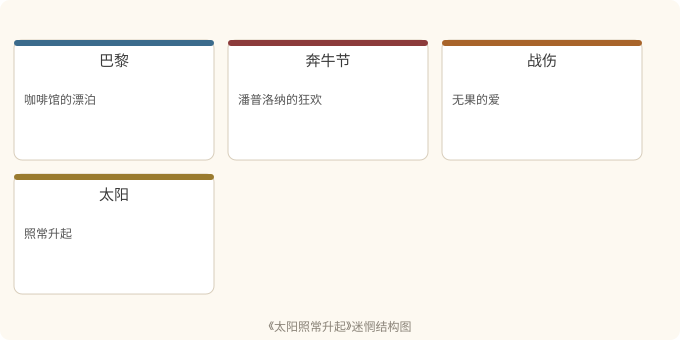

太阳照常升起
一、基本信息
| 作者 | 海明威 |
|---|---|
| 成书/出版 | 1926年（作者页 B051/B024 口径：太阳照常升起（1926）） Ernest Hemingway — Encyclopaedia Britannica（百科全书） |
| 国别/地区 | 美国 |
| 时代 | 现当代 · 20世纪 |
| 体裁 | 长篇小说 |
| 语言 | 英语 |

《太阳照常升起》迷惘结构图（主题·结构图）
二、创作背景
作者页（B051/B024）：海明威 major_works 载'太阳照常升起（1926）、永别了武器（1929）、丧钟为谁而鸣（1940）'（作者页定位，详见 laorenhai 条核对）。
题材（通说待核）：'迷惘的一代'的巴黎与潘普洛纳奔牛节——杰克·巴恩斯与勃莱特。
三、内容脉络
战伤的杰克与勃莱特无果的爱；西班牙奔牛节的狂欢与斗牛士罗梅罗（通说待核）。
四、主要人物表
| 人物 | 身份 | 说明 |
|---|---|---|
| 杰克·巴恩斯 | 记者 | 战伤者（通说待核） |
| 勃莱特 | 贵妇 | （通说待核） |
| 罗梅罗 | 斗牛士 | （通说待核） |
五、主题与艺术特点
- '迷惘的一代'（书内题词——通说待核）。
- 冰山文体（作者风格——通说）。
- 斗牛与尊严（通说待核）。
六、影响与评论
- 作者页：海明威成名作（B051/B024 作者页口径）。
Ernest Hemingway — Encyclopaedia Britannica（百科全书） - '迷惘的一代'的命名之作（通说待核）。
Ernest Hemingway — Encyclopaedia Britannica（百科全书）
七、阅读建议
难点
- 对话之下的潜流。
- 1920年代巴黎地理。
- 《太阳照常升起》（上海译文出版社，通说待核）。
- 英文原版（公有领域渐近）。
先《太阳照常升起》后《永别了武器》。
八、待核实
- 1926年出版（Scribner说）核对。
- 杰克/勃莱特/罗梅罗人名核对。
- '迷惘的一代'出处（格特鲁德·斯泰因）待核。
本页主要来源
- Ernest Hemingway — Encyclopaedia Britannica（百科全书）
- The Old Man and the Sea — Encyclopaedia Britannica（百科全书）
海明威的其他收录作品：老人与海